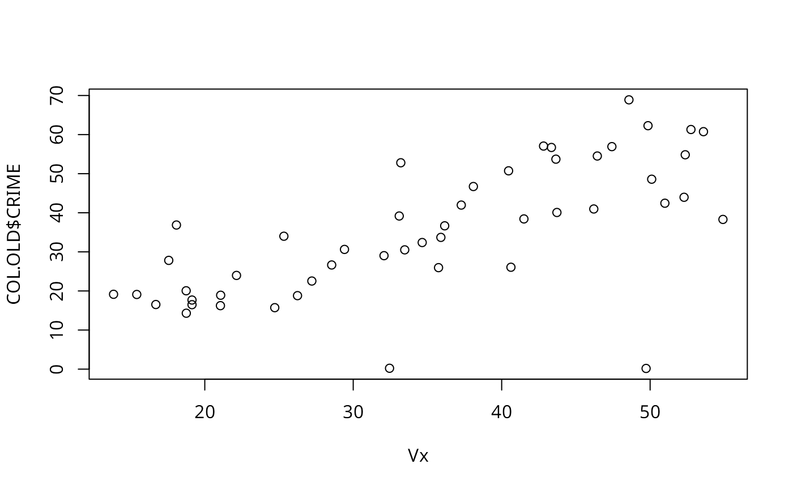
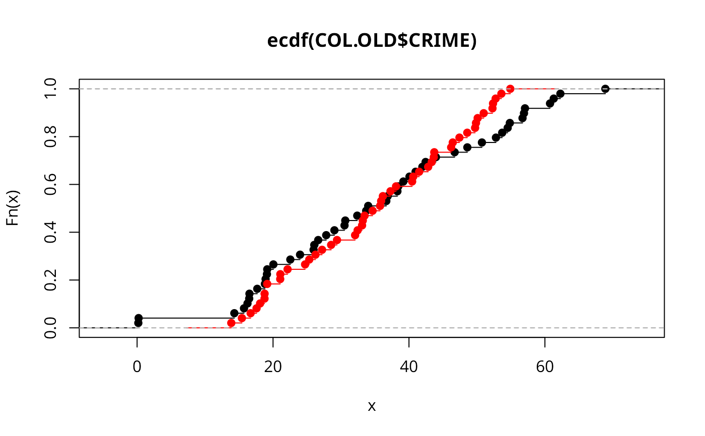

Spatial lag of a numeric vector
lag.listw.RdUsing a listw sparse representation of a spatial weights matrix, compute the lag vector \(V x\)
Arguments
- x
a
listwobject created for example bynb2listw- var
a numeric vector the same length as the neighbours list in listw
- zero.policy
default
attr(listw, "zero.policy")as set whenlistwwas created, if attribute not set, use global option value; if TRUE assign zero to the lagged value of zones without neighbours, if FALSE assign NA- NAOK
If 'FALSE', the presence of 'NA' values is regarded as an error; if 'TRUE' then any 'NA' or 'NaN' or 'Inf' values in var are represented as an NA lagged value.
- ...
additional arguments
Author
Roger Bivand Roger.Bivand@nhh.no
Examples
data(oldcol)
Vx <- lag.listw(nb2listw(COL.nb, style="W"), COL.OLD$CRIME)
plot(Vx, COL.OLD$CRIME)

plot(ecdf(COL.OLD$CRIME))
plot(ecdf(Vx), add=TRUE, col.points="red", col.hor="red")

is.na(COL.OLD$CRIME[5]) <- TRUE
VxNA <- lag.listw(nb2listw(COL.nb, style="W"), COL.OLD$CRIME, NAOK=TRUE)
#> Warning: NAs in lagged values